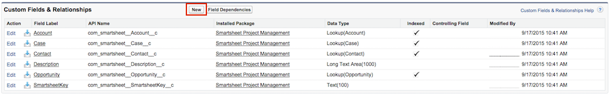

Getting Started
Overview
When Smartsheet is integrated with Salesforce, users can link project sheets to accounts, contacts, opportunities, other CRM objects or any custom object for real-time collaboration on project tasks and related files and discussions.
Versioning
There is some general confusion on the versioning for the Smartsheet for Salesforce App. Each time a new version is released the version number is incremented by one digit (i.e. 2.2, 2.3, 2.4… 2.16). So, to clarify: v2.2 predates v2.16.
2.16 is the most recent version of the Smartsheet for Salesforce App.
Requirements
To use the Smartsheet for Salesforce app, there are a few requirements:
- Smartsheet user license.
- Access to Salesforce sandbox or production instance.
Smartsheet - Plans, Pricing, and Assistance:
After installing Smartsheet for Salesforce via the AppExchange, your users can start a free 30-day trial of Smartsheet by launching Smartsheet from within Salesforce and creating their first sheet. The user’s email address (in Salesforce) serves as their email address for their Smartsheet account. Any users on a Trial or Basic account can be can be absorbed into a multi-user or domain license at any time, should you choose to license Smartsheet for your organization.
If a user is neither added to an existing license nor elects to upgrade their account before their trial expires, he or she will lose the ability to create sheets. They will continue to have access to sheets shared to them by other licensed users.
Support
To learn more about Smartsheet or review licensing options:
- Visit our website at www.smartsheet.com
- Browse our help articles
- E-mail support@smartsheet.com
- Call us at (425) 283-1870
For technical support of the Smartsheet for Salesforce app, please send us a detailed message at api@smartsheet.com. If reporting an issue, please include the following in your message:
- Screenshots of the error message
- Exact steps to reproduce the error
Grant Login Access
Please follow these steps to grant Smartsheet temporary access to your Salesforce instance.
Click on your name or login information in the upper-right hand corner, then click Setup:
On the Setup page, navigate to My Personal Information -> Grant Login Access:
on the Smartsheet Support row, click on the –No Access– dropdown and Select a time, then click Save:
Log into the Salesforce account that is having the issue, then click on Setup:
Then click on Company Profile:
Then Update Your Company Information:
Send us the Salesforce.com Organization ID that is listed in the right hand column toward the bottom:
Installation
If you are a new user, please follow the steps below to install the Smartsheet for Salesforce.
Getting the App
First, you need to get the Smartsheet for Salesforce app from Salesforce.com’s AppExchange.
-
Go to the Smartsheet listing on Salesforce.com’s AppExchange.
-
Ensure you are logged in with your Salesforce administrator account using the Login or Register button in the page header.
-
Click Get It Now.
Installing the App
-
Select if you would like to install the Smartsheet for Salesforce application in your Production or Sandbox Salesforce environment.

-
Read and accept the terms and conditions, and then click Confirm and Install.

-
Select Install for All Users and click Install. (To view a list of permissions for the package, click on API Access.)
-
Select Yes, grant access to these third-party web sites option, and then click Continue.

-
Once the installation has completed, click on Done on the confirmation page.

Configuration
This section covers the process to configure Smartsheet within Salesforce. These steps are recommended in order to provide the best experience possible.
Set Custom Field Relationships
By default, Smartsheet for Salesforce allows you to relate Smartsheets to the standard Account, Opportunity, Contact, or Case objects in Salesforce. If you do not need to relate Smartsheets to other types of Salesforce objects, you can skip this section.
If you want the ability to relate Smartsheets to other types of Salesforce objects, you must create a relationship between the Smartsheet object and the other object types. This section of the documentation describes that process.
To create a relationship between the Smartsheet object and another object type:
-
Go to Setup > Create > Objects.
-
On the Custom Objects page, click Smartsheet. The Smartsheet object page appears:
-
Click Custom Fields & Relationships, then click New:

-
Select the Lookup Relationship option, then click Next.

-
From the Related To list, choose the object to which you want to link Smartsheets, then click Next.
(In this example, we will use the Product object.)

-
Fill in the Field Label, Field Name, and Child Relationship Name fields, then click Next.
-
Choose the appropriate field-level security for your new lookup field, then click Next.

-
Confirm the default settings, then click Next.

-
Accept or change the default related list label of Smartsheets, then click Save. You have now enabled the linking of Smartsheets to the selected object.
Add Smartsheets Related List
Use the steps below to add a Smartsheets related list to the page layout(s) for standard Salesforce objects or for custom objects.
-
For a standard Salesforce object:
- Go to Setup > Customize > Accounts > Page Layouts.
- Click Edit next to the page layout you want to change (e.g. Account (Sales) layout).
-
For a custom object:
- Go to Setup > Create > Objects.
- Click the label for the custom object.
- In the Page Layouts section, click Edit next to the page layout you want to change.
-
Click Related Lists on the left side of the page header.
-
Drag the Smartsheets related list from the list picker in the page header to the desired location in your page layout.

-
In the page layout, click the wrench icon next to the Smartsheets list you just dragged.
-
Configure Columns for the related list:
-
In the Available Fields list, click Description, and then click the Add button (right arrow) to add it.
-
In the Available Fields list, click Description, and then click the Add button (right arrow) to add it.
-
Configure Buttons for the related list:
- Click the + (plus) icon on the right side of the Buttons section to expand the Button properties.
- Click Link Existing Smartsheet and Launch Smartsheet from the Available Buttons list.
- Click the Add button (right arrow).
- Click the Launch Smartsheet button in the Selected Buttons list.
- Click the Down button (down arrow) to move it after the Link Existing Smartsheet button.
- Click OK.
-
Click Save.
-
You may be prompted to overwrite users’ personal related list customizations.

- Select Yes if you want the users to see the new Smartsheets related list you just added.
- If you answer No, users who have customized their related lists must manually add the Smartsheets related list.
- Select Yes if you want the users to see the new Smartsheets related list you just added.
Add link to Home Page sidebar
This is an optional step that gives your users an easy way to open Smartsheet by adding a Launch Smartsheet link to the Home Page sidebar.
To add a Launch Smartsheet link to the Home Page sidebar:
-
Under Setup, select Customize > Home > Home Page Layouts.
-
Click Edit next to the home page layout you want to change.

-
Select the checkbox for Smartsheet, then click Next.
-
(Optional) Reorder the Smartsheet component, then click Save.

Hide the Application & Tab
Since the Smartsheet app is mainly used to link Sheets in Smartsheet to other objects in Salesforce, we recommend following these steps to hide the Smartsheet app and Smartsheets tab from users.
To hide the Smartsheet app and tab:
-
Within Administration Setup, select Manage Users > Profiles.
-
Click Edit next to the profile that you want to configure.

-
Under Custom App Settings, clear the Smartsheet checkbox.
-
Under Tab Settings, change the Smartsheets dropdown to Tab Hidden.

-
Click Save.
FAQ
Communication Error
You may encounter this error message when attempting to use the Smartsheet for Salesforce App:

If you see this error, it is because you are running version 1.5 or earlier of the Smartsheet for Salesforce app. In order to restore functionality, you will need to update to the latest version of the Smartsheet for Salesforce app.